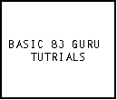
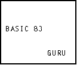
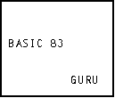

| HOME >> Tutorials >> Tutorial 20: Animation |
Introduction:
In this tutorial, I will show you a simple animation trick that you can do on the home screen. For the first time in any of the tutorials, there are no new commands. I'm just going to jump right into the code.
The Code:
This code is an example of an opening screen I once used in one of my programs. It has letters and words moving across the home screen into place. It looks pretty cool I think. The nice thing about this animation is that the user does not have to press anything for it to work. The code looks long, but it doesn't take long to enter it in.
| : | For AShell, SOS, and TI-Explorer |
| ClrHome | Clears the home screen |
| Output(4,2,"BASIC 83 GURU | Displays the text "BASIC 83 GURU" |
| Output(5,4,"TUTORIALS | Displays the text "TUTORIALS" on the next line |
| Pause | Suspends program and waits for user to press |
| ClrHome | Clears the home screen |
| For(X,11,2,-1 | X is going to be stored from 11-2 |
| Output(4,X,"BASIC | "BASIC" moves across the screen from right to left |
| Output(4,X+5," " | Displays a blank space after "BASIC" |
| For(A,1,20 | This line and the next are used to make the |
| End | word go across the screen a little slower |
| End | End of the For loop |
| For(Y,2,4 | Y is going to be stored from 2-4 |
| Output(Y,8,"8 | "8" moves across the screen from top to middle |
| Output(Y-1,8," " | Displays a blank space above the "8" |
| For(B,1,30 | This line and the next are used to make the |
| End | word go across the screen a little slower |
| End | End of the For loop |
| For(X,15,9,-1 | X is going to be stored from 15-9 |
| Output(4,X,"3 | "3" moves across the screen from right to left |
| Output(4,X+1," " | Displays a blank space after the "3" |
| For(A,1,20 | This line and the next are used to make the |
| End | word go across the screen a little slower |
| End | End of the For loop |
| For(Y,7,4,-1 | Y is going to be stored from 7-4 |
| Output(Y,11,"GURU | "GURU" moves from top to middle |
| Output(Y+1,11," " | Displays four spaces below the word "GURU" |
| For(B,1,30 | This line and the next are used to make the |
| End | word go across the screen a little slower |
| End | End of the For loop |
| Output(5,4,"TUTORIALS | Displays the text "TUTORIALS" on the next line |
| Pause | Suspends program and waits for user to press |
Possible output:
 press  

Further Explanation:
What this program does is, first, displays the title in the old boring way. Then after the user presses  , the program clears the screen and sends "BASIC" flying across the screen from the right. Then "8" comes from the top, "3" comes from the right, and "GURU" comes from the bottom. "TUTORIALS" is just displayed on the screen after that. One thing that you must make sure is that you don't use the same variable for the main For loop that moves the word and the For loop that just makes the words move slower. If you did, the letter would only move one space. For an example, let's use the second For loop where the "8" is moving from the top of the screen. Y originally starts of being 2. If you had Y as the variable in the delaying For loop, Y would become 30 at the end of it. Then when the program goes back to the main For loop, Y (30) is already bigger than four, so the For loop thinks it is done and goes on to the next main For loop. Try it and see.
, the program clears the screen and sends "BASIC" flying across the screen from the right. Then "8" comes from the top, "3" comes from the right, and "GURU" comes from the bottom. "TUTORIALS" is just displayed on the screen after that. One thing that you must make sure is that you don't use the same variable for the main For loop that moves the word and the For loop that just makes the words move slower. If you did, the letter would only move one space. For an example, let's use the second For loop where the "8" is moving from the top of the screen. Y originally starts of being 2. If you had Y as the variable in the delaying For loop, Y would become 30 at the end of it. Then when the program goes back to the main For loop, Y (30) is already bigger than four, so the For loop thinks it is done and goes on to the next main For loop. Try it and see.
Conclusion:
Now you know another type of opening sequence. I think this one is my favorite. If you have any more ideas on a different type of animation that you would like to see done, just email me and I'll see if I can do it. If I can do it, I'll email you the code and add it as a "Version 3.0 Update" to this tutorial when I release v3.0. If there is anybody out there who knows a lot of BASIC programming, I have a question for you. I've been trying to figure out how to make pictures move across the graph screen. The only way I have thought of doing this requires that all the drawings be redrawn each time and that'll be very slow. If you know of way to do this, please email me. The next three tutorials will all cover one command. The next tutorial, just covers the basic usages of the command, while the last two tutorials are cool add-ons that you can put in your programs to make them really unique.
If you do not understand a particular part in this lesson, have suggestions, or find any problems please contact me.
 |
 |
| Tutorial 19 | Tutorial 21 |